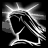
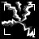
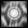
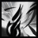
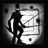
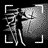

THE PALADIN
The Median XL: Ultimative paladin class is an armour-clad heavyweight who can take a beating and return the favours with physical and elemental melee attacks and spells.
BACKGROUND OF THE MEDIAN XL: ULTIMATIVE PALADIN
After the fall of the Hand of Zakarum, the paladin orders disbanded one by one or were torn apart by internal conflicts. The weakening influence of the central Church in Kehjistan and the mysterious disappearance of the Que-Hegan only contributed to the chaos.
The faithful of the Light looked elsewhere for answers and banded together around the new prophets. From the ashes of the old orders, two sects with a radically different interpretation of the Akaran scriptures and diametrically opposite morals arose. Although many feared for a holy war, the leaders of the sects agreed to close their ranks and work together against the common foe unfettered by infighting and distrust.
The Covenant of the Golden Flame, led by a prophet who claims to receive instructions directly from the angel Auriel, preaches unity and brotherhood among the faithful of Zakarum and the destruction of those who work against the Church. By joining forces against the demonic legions, the armies of Man and Angel would be able to deliver the death blow to the Burning Hells.
The sinister Black Sun Cult, under the command of an avatar of the angel Imperius, sees mankind as inherently unstable and prone to fall to demonic temptation. For the High Heavens to win the Eternal War, its acolytes argue, humanity must be cleansed from Sanctuary.
Scholars believe that the schism between the two orders heralds an all out civil war in the High Heavens about the fate of Sanctuary. But all agree that whatever the outcome, it is in humanity’s best interest to banish all influence of the Burning Hells from Sanctuary...
BASE STATS
Strength : 25
Dexterity : 20
Vitality : 25 (75 life)
Energy : 15 (15 mana)
+30 life, +10 mana per level
Gains +3 life per point into vitality
Gains +2 mana per point into energy
PREFERRED WEAPONS
The holy warriors of the Covenant prefer heavy one-handed or two-handed crushing weapons to shatter the bones of their enemies. Only the Covenant’s champions can wield the order’s powerful maces and hammers, blessed in the holy waters of the Argentek for maximum impact.
Although a less common sight, some champions of the Church are seen wielding jousting lances. While lacking in speed, they enable the wielder to attack from a safe distance, avoiding most counterattacks.
The Black Sun Cult has less restrictive morals and is eager to do whatever it takes. Despite the corrupting influence of the arcane, the Cult’s warriors are trained in the use of magically charged channelling sceptres in melee and elemental combat.
Class-specific 2h weapon: Paladin Maul (On hit: Amazing Grace)
Class-specific 2h weapon: Paladin Spear (On hit: Amazing Grace)
Also uses swords and scepters
See THIS PAGE for more information about Amazing Grace.
PREFERRED ARMOUR
The Church is famous for its high quality shields, but many paladins eschew the use of a shield altogether. A true defender of the Light does not hide behind a shield, but challenges his enemies to strike first and then retaliates with decisive force.
The blackguards and shadowpriests of the Black Sun Cult on the other hand have no qualms about using a shield to protect themselves and their own interests and consider the two-handed combat style of the Covenant foolish and suicidal.
A distinctive feature of the paladin orders in battle are their full helms emblazoned with the order’s crest. The Covenant prefers the protection of the impenetrable steel hundsgugel helm, whereas the Cult goes for the intimidation factor of a large horned death’s head.
Class-specific helm: Paladin Helm
THE IRON CURTAIN
Although there is an uneasy peace between the two paladin orders, neither side has much love for the other and those who prefer to learn both doctrines would probably be treated as traitors and burned by the Covenant or flayed alive by the Cult.
You have to choose between Holy and Unholy skills. You may chose either a Holy or Unholy influence regardless of your devotion.
SKILLS
| Name | Icon | Effect |
|---|---|---|
| RETALIATE | A defender of the Light never strikes the first blow, but it is his holy plight to defend himself and viciously strike back against those who seek to commit wrongs against him. Effect: melee attack that releases a shockwave when struck | |
| HAMMERSTRIKE | The knight of the Golden Flame is the Light's judge, jury and executor on the mortal plane,
bringing the hammer of justice down upon the spawn of hell. Effect: melee attack that hits an area and has a % to deal massive damage | |
| MERKABAH | 
|
To the faithful, the Light is a soothing blessed glow. To the wicked, it is a burning eye of final judgement,
searing their flesh and spirit and eradicating them from this world. Effect: when active, periodically deals magic damage in a radius |
| LIONHEART |  | The faithful of Zakarum need not fear evil, for the Light is with them. A paladin of the Church never runs and never retreats until justice has been carried out. Effect: increases damage and defence but slows running speed |
| COLOSSEUM | 
| Sanctifying the ground on which he chooses to make his stand, with the flame of Zakarum in his heart a single dragon knight can ward off an army. Effect: crash into target and raise an arena of fire that weakens enemies |
| VESSEL OF RETRIBUTION | Even the most novice paladin walks with the power of Zakarum, to mete out justice to the minions of the Burning Hells. Effect: automatically casts short ranged energy bolts at nearby enemies | |
| RAPTURE | 
| Free of earthly limits, the paladin reaches his full God-given potential, mowing down the enemies of the Light like an avenging whirlwind from heaven. Effect: temporarily increases all character speeds |
| SOLSTICE AND EQUINOX |  | Meditation in his order’s martial temple strengthens the holy knight’s aura of righteousness, empowering the physical ethereal manifestation of his resolve. Passive effect: improves your Vessel of Retribution based on alignment |
| SACRED ARMOR | Zakarum protects His faithful in times of need. With the subtle aid of His spirits, the paladin's enemies fumble and manage to strike only glancing blows. Effect: temporary invulnerability shield | |
| HOPLITE | 
| Every Zakarum church trains Hoplites to safeguard itself and assist Paladins on their endeavours. The protectors of the Zakarum order are yours to command in battle. Effect: summon a fervent army of guards |
| DRAGON OATH | Bathe your enemies and yourself in dragonfire and turn to a Dragon knight to show them the miracle and power of the Zakarum, and preach destruction to those that refuse to convert. Effect: cast a devastating nova that morphs you into a powerful Dragon knight | |
| DRAGONSHOUT |  | Shout the holy scripture at the top of your lungs, making the sinners and pagans recoil and bleed for their heresy. Effect: cast a single stunning & knock-backing: missile (human) or wave of force (dragon) |
| BURNOUT |  | When listening to the glorious words of the Book of Akarat doesn't move their soul, burn the soulless creatures to a crisp, for they are truly the spawn of the Burning hells. Effect: cast a ricocheting fire stream that leaves a wall of fire in its wake |
| DEMONREND |  | Sometimes one preacher isn't enough for the masses – call in allies by magically shaping them with the holy smoke of the dragonfire. Effect: summon a demonic mage to protect you (human) summon a mage trio to pulverize enemies (dragon) |
| DEVA KING | Only a few that were sanctified by bathing in the blood of a foul dragon they slain can become a higher Deva – an unstoppable juggernaut, a Hammer of Light! Passive Effect: become the Deva King, improving your melee combat abilities | |
| TERROR STRIKE | 
| Not all of the Cult's miracles are divine. Even a novice blackguard knows how to empower his weapon with elemental force and launch a devastating strike while protecting himself with black metal armor from thin air. Effect: melee attack that empowers increases spell damage and defense |
| LEMURES | 
| Zakarum is the beacon of all that is good and just. For those not among His faithful, all that awaits them after their fall from grace is the eternal darkness of the Void. Effect: melee attack that unleashes homing cold spirits |
| BLACK SLEEP | The initiate blackguard possesses the mind of an enemy with terrifying visions. The Black Sleep of Khalim Ma forces the victim to redeem itself by unwillingly aiding the cause of the Light. Effect: melee attack that converts enemy to fight evil | |
| BLOOD THORNS | Prophet Akarat died for humanity's sins, and the blackguard of Zakarum is determined to make the heathen spawn of Hell die for theirs. Effect: melee attack that unleashes burning nails | |
| HYMN | Singing this sinister chant to Zakarum, the paladin and his brothers are blessed for each drop of heathen blood spilled. Effect: party gains life on successful melee attacks | |
| VESSEL OF JUDGEMENT | 
| Even the most novice paladin walks with the power of Zakarum, his presence striking down the forces of Hell where they stand. Effect: automatically casts energy bolts at nearby enemies |
| EUPHORIA | By the grace of Imperius the paladin is imbued with the essence of Valour, allowing him to strip the unrighteous of their defences and enact swift retribution. Effect: when active, ignores the elemental resistances of enemies | |
| LIFE AND DEATH | Meditation in his order’s martial temple strengthens the unholy knight’s aura of hatred, empowering the physical ethereal manifestation of his resolve. Passive effect: improves your Vessel of Judgement based on alignment | |
| DEMIURGE | Channel the essence of the Archangel of Valour, assuming his great strength and power to bring forth the judgement of the High Heavens. Effect: temporarily strengthens you and calls angels from the dead | |
| SCOURGE |
| There is no justice like angry mob justice. The farmers and workers of Westmarch stand ready to
aid in the battle against the unholy menace. Effect: summons zealous followers |
| TAINTED BLOOD | 
| The Cult's harsh food regime, mostly consisting of heathen flesh, prepares them for the reality of having to survive on dubious mushrooms and toxic spiders on the field. Effect: infects caster or target ally with healing poison |
| MIND FLAY | 
| With a dark prayer, the adept shadowpriest unleashes a storm of divine fire and lightning to melt the faces of those who stand against the Cult. Effect: chaos energy beam that explodes on the target |
| SYMPHONY OF DESTRUCTION | The cleansing of this world is as an unstoppable rock that rolls down from Mount Zakarum to strike down the pagans with thunder and lightning, power and might. Effect: when active, nearby enemies randomly explode into gibs | |
| SLAYER | He who rejects the authority of the Light will forever be haunted by nightmares of the Cult's creatures clawing at him and dragging him down into Hell to burn. Effect: shadow creature guards an area with unholy bolts | |
| STORMLORD | 
| Where the Covenant preaches modesty and humbleness before the Light and their fellow men, the Black Sun Cult believes that a warrior of Heaven has nothing to be ashamed of. Seize the power before the enemy does. Passive effect: bonus to all attributes |
UBERSKILLS
You may choose a single uberskill at character level 90 and above.
| Name | Icon | Effect |
|---|---|---|
| PLAGUE | 
| The black death of Zakarum cleanses the land, consuming the pagan and godless and leaving only the honourable and faithful in its wake. Passive effect: adds poison to weapon attacks |
| SUPERBEAST | Giving himself over to the spirits of the Shadow, the paladin of the Cult slaughters his enemies in the throes of holy madness. Effect: turns caster into a shadowfiend, increasing all speeds | |
| RESURRECT | 
| The embrace of Zakarum represents love, compassion and forgiveness. Even those shown the Light after the most heinous crimes are granted a chance to redeem their wrongs by the grace of Zakarum. Effect: raises dead monsters to fight for you |
ENNEAD SKILL
After completing the Ennead Challenge and keeping the Class Charm in the inventory while at character level 90 and above, you can invest points in this skill.
See THIS PAGE for more information about the Ennead Challenge.
| Name | Icon | Effect |
|---|---|---|
| DIVINE APPARITION | 
| Like a deus ex machina, the paladin of Zakarum descends upon the battlefield, his mere appearance chilling his
heathen enemies to the bone. Effect: teleport to target location and freeze enemies |
BLACK ROAD SKILL
After completing the Black Road Challenge and keeping the Class Charm in the inventory while at character level 90 and above, you can invest points in this skill.
See THIS PAGE for more information about the Black Road Challenge.
| Name | Icon | Effect |
|---|---|---|
| BLESSED LIFE |  | A life of worship teaches the warrior of Zakarum the futility of evil. The denizens of hell are but vermin to an emissary of the Light. Passive effect: reduces damage taken and speeds up healing apples |
INNATE SKILL
Paladins start with the following skill in their icon list.
| Name | Icon | Effect |
|---|---|---|
| VINDICATE | Zakarum rewards those who fight selflessly for all that is good and just. It is said that the Light blesses his greatest champions with eternal life and the power to fight forever as a hero of justice. Curse effect: killing cursed foe heals party and increases damage | |